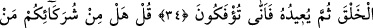
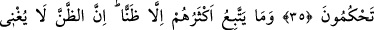
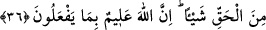
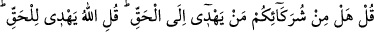
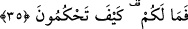

NASIL HÜKMEDİYORSUNUZ?
34. De ki: “Sizin koştuğunuz ortaklardan, ilk defa yaratacak, sonra onu çevirip
eski şekliyle yeniden yaratacak olan var mı?” De ki: “Allah ilk defa yaratır, sonra
onu çevirip yeniden yaratır. Öyle ise nasıl (doğru yoldan) çevriliyorsunuz?”
35. De ki: “Sizin ortak koştuklarınızdan gerçeğe götürecek var mı?” De ki:
“Gerçeğe götüren Allah’tır. Gerçeğe götüren mi uyulmaya daha lâyıktır, yoksa
hidâyet verilmedikçe kendi kendine doğru yolu bulamayan mı?” O halde neyiniz
var! Nasıl hükmediyorsunuz?
36. Onların çoğu zandan başka bir şeye uymuyorlar. Zan ise gerçekten hiçbir şey
kazandırmaz. Doğrusu Allah onların yapmakta olduklarını bilir.
De ki: “Sizin koştuğunuz ortaklardan ilk defa yaratacak, sonra onu çevirip eski
şekliyle yeniden yaratacak olan var mı?” Yani ilk yaratılışı kabul ettikleri,
inadlarından ve böbürlendiklerinden yeniden yaratılışı inkar ettikleri için müşriklere
bunu kimin yaptığını açıklaması Hz. Peygamber (s.a.)’e şöyle emredildi: “De ki: “Allah
ilk defa yaratır, sonra onu çevirip yeniden yaratır.” Bu işleri, kim olursa olsun O’nun
dışında hiç kimse değil, sadece O yapar. “Öyle ise nasıl” doğru yoldan
“çevriliyorsunuz?” Doğru yoldan nasıl döndürülüyorsunuz? Bu soru, istifhâm-ı
inkârîdir. Yani reddetmek için sorulmuştur.